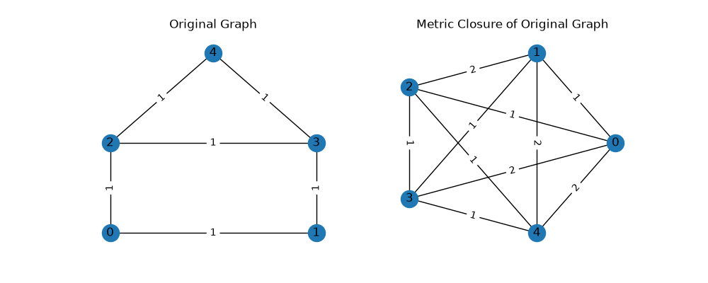

Note
Go to the end to download the full example code.
Metric Closure#
The metric closure of a graph is the complete graph in which each edge weight corresponds to the shortest-path distance between two nodes in the original graph.
This example demonstrates the unweighted version of the metric closure,
constructed using
all_pairs_shortest_path_length().
Here, each edge is assumed to have weight 1, so distances correspond to
the minimum number of hops between nodes.
For weighted graphs, the metric closure can be obtained instead with
all_pairs_dijkstra_path_length(),
which computes distances using the minimum total edge weights along paths.

{0: {0: 0, 1: 1, 2: 1, 3: 2, 4: 2},
1: {0: 1, 1: 0, 2: 2, 3: 1, 4: 2},
2: {0: 1, 1: 2, 2: 0, 3: 1, 4: 1},
3: {0: 2, 1: 1, 2: 1, 3: 0, 4: 1},
4: {0: 2, 1: 2, 2: 1, 3: 1, 4: 0}}
import networkx as nx
import matplotlib.pyplot as plt
from pprint import pprint
# Creating five nodes from index 0 to 4
G = nx.house_graph()
# Find the all-pairs shortest distance
# all_pairs_shortest_path_length returns a one-time generator,
# so wrap with dict() to materialize results for reuse
paths = dict(nx.all_pairs_shortest_path_length(G))
# Dictionary format: u: {v: d}, meaning "distance d from node u to node v"
pprint(paths)
# Metric closure of G
M = nx.Graph()
for u, dist_dict in paths.items():
for v, d in dist_dict.items():
if u != v: # avoid self-loops
M.add_edge(u, v, distance=d)
# Visualize G and its metric closure
fig, axes = plt.subplots(1, 2, figsize=(10, 4))
pos = {0: (0, 0), 1: (1, 0), 2: (0, 1), 3: (1, 1), 4: (0.5, 2.0)}
nx.draw(G, pos, with_labels=True, ax=axes[0])
nx.draw_networkx_edge_labels(
G,
pos,
edge_labels={(u, v): 1 for u, v, d in G.edges(data=True)},
ax=axes[0],
)
axes[0].set_title("Original Graph")
pos_mc = nx.circular_layout(M)
nx.draw(M, pos_mc, with_labels=True, ax=axes[1])
nx.draw_networkx_edge_labels(
M,
pos_mc,
edge_labels={(u, v): d for u, v, d in M.edges(data="distance")},
ax=axes[1],
)
axes[1].set_title("Metric Closure of Original Graph")
plt.show()
Total running time of the script: (0 minutes 0.122 seconds)